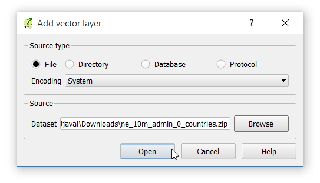
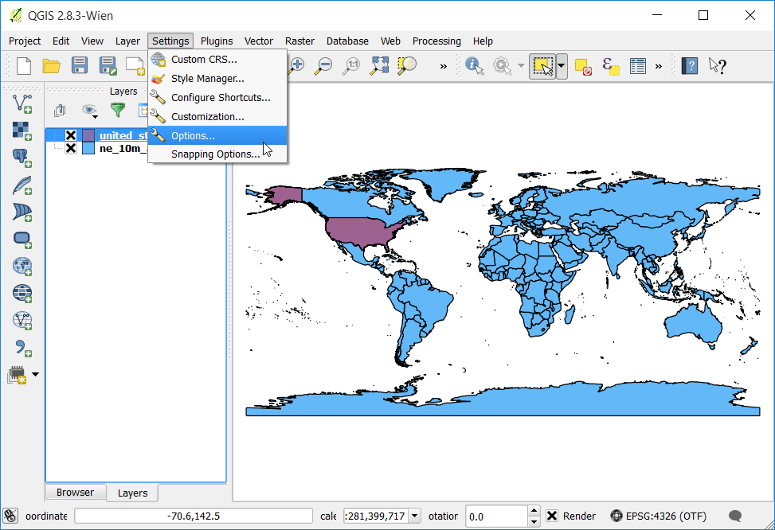
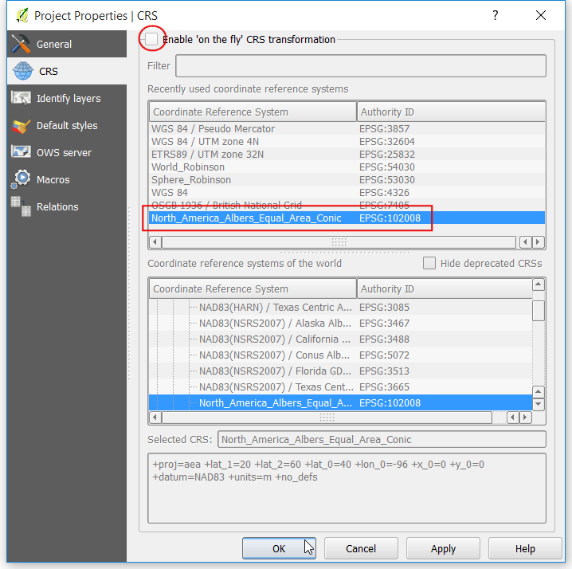
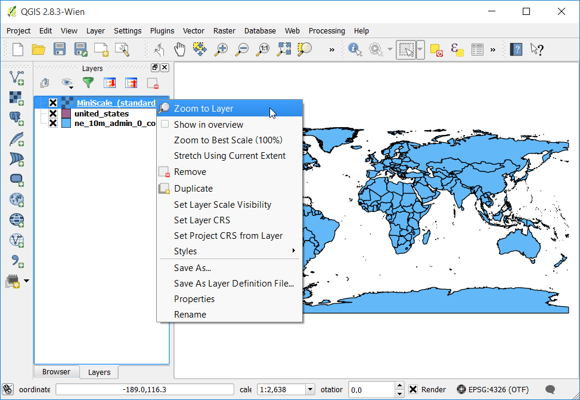

Bekerja dengan Data Permukaan Medan
[ Download PDF A4 Letter ]
Data permukaan atau elevasi berguna untuk banyak analisa GIS dan sering digunakan dalam Peta-peta. Qgis mempunyai kemampuan built-in yang baik untuk memproses permukaan medan. Dalam tutorial ini, kita akan bekerja melalui beberapa tahapan untuk menghasilkan bermacam-macam produk dari data elevasi seperti kontur, hillshade dan lain-lain.
Tinjauan Tugas
Tugasnya adalah untuk membuat peta kontur dan hillshade untuk area di sekita Gunung Everest.
Skill lain yang akan anda pelajari
Mendapatkan data
Kita akan bekerja dengan dataset GMTED2010 dari USGS. Data ini dapat diunduh dari situs USGS Earthexplorer <http://earthexplorer.usgs.gov/> , GMTED (Global Multi-resolution Terrain Elevation Data) adalah versi baru dataset permukaan medan dari GTOPO30.
Berikut bagaimana mencari dan mengunduh data releven dari USGS Earthexplorer.
Pergi ke USGS Earthexplorer . Pada tab:guilabel:Search Criteria , cari tempat bernama Mt. Everest . Klik hasil untuk memilih lokasi.

Pada tab Data Sets , ekspan grup Digital Elevation, dan centrang GMTED2010.

Anda dapat melewatkan beberapa hal sampai tab Results dan lihat bagian dataset yang sesuai dengan kriteria anda. Klik tombol Download Options . Anda akan diharuskan untuk log in pada sebuah situ. Anda bisa membuat akun bebas jika anda belum punya.

Pilih opsi 30 ARC SEC dan pilih Select Download Option.

Sekarang anda akan memilik file bernama GMTED2010N10E060_300.zip . Data elevasi ini terdistribusi dalam berbagai format raster seperti xxx dan lain-lain. QGIS mendukung banyak variety of raster formats lewat library GDAL. Data GMTED berbentuk file GeoTiff yang berada dalam arsip zip.
Untuk kenyamanan, anda akan mengunduh sebuah kopi data secara langsund dari bawah.
GMTED2010N10E060_300.zip
Sumber Data: [GMTED2010]
Prosedur
Buka dan jelajahi file zip yang sudah diunduh.

Ada banyak file berbeda yang dihasilkan dari algoritma yang berbeda. Untuk tutorial ini, kita akan menggunakan file bernama 10n060e_20101117_gmted_mea300.tif.

Anda akan melihat data permukaan medan yang dirender di kanvas QGIS. Tiap pixel pada raster permukaan medan merepresentasikan elevasi rata-rata dalam meter pada lokasi tersebut. Pixek yang gelap merepresentasikan area dengan ketinggian rendah dan pixel yang lebih teran merepresentasikan area dengan Ketinggian yang tinggi.

Mari cari area yang akan kita selidiki. Dari Wikipedia , kita menemukan bahwa koordinat untuk area ketertarikkan kita - Gunung Everest - berlokasi pada koordinat 27.9881° N, 86.9253° E . Catat bahwa QGIS menggunakan koordinat dalam format (X,Y), jadi anda harus menggunakan koordinat seperti (Bujur, Lintang). Paste 86.9253,27.9881 pada sebelah bawah jendela QGIS dimana ada disebutkan Coordinate dan tekan Enter. Viewport akan terpusatkan pada koordinat ini. Untuk menzoom-in, masukkan 1:1000000 pada field Scale dan tekan Enter. Anda akan melihat viewport terzoom ke area di sekitar Himalaya.

Sekarang kita akan melakukan crop raster pada area interest ini. Pilih tool Clipper dari .
Catatan
Menu Raster di QGIS termasuk dalam plugin inti bernama GdalTools . Jika anda tidak melihat menu Raster, aktifkan plugin GdalTools dari . Lihat docs/using_plugins untuk detail yang lebih jelas.

Pada jendela Clipper, beri nama file output everest_gmted30.tif . Pilih Clipping mode untuk Extent.

Pilih jendela Clipper buka dan ganti ke jendela utama QGIS. Tahan tombol kiri mouse anda dan gambar sebuah segi empat yang meliputi seluruh kanvas.

Sekarang kembali ke jendela Clipper , anda akan melihat koordinat terkumpul secara otomastis dari seleksi anda. Pastikan opsi Load into canvas when finished aktif , dan klik OK.

Ketika proses selesai, anda akan melihat sebuah layer baru terbuka di QGIS. Layer meliputi hanya area di sekitar Gunung Everst. Sekarang kita siap untuk menghasilkan kontur. Pilih tool kontur dari .

Pada dialog Contour , pilih everest_gmted30 untuk Input file . Beri nama Output file for contour lines dengan everest_countours.shp . Kita akan menghasilkan garis kontur untuk interval 100m, jadi taruh 100 untuk Interval between contour lines. . Centrang juga opsi Attribute name sehingga nilai elevasi akan terekam sebagai atribut dari setiap garis kontur. Klik OK.

Ketika proses sudah selesai., anda akan melihat garis kontur terbuka di kanvas. Setiap garis pada layer merepresentasikan sebuah elevasi tertentu. Semua poin sepanjang garis kontur pada raster memiliki elevasi yang sama. Semakin dekat garis, semakin dalam juga lerengnya, Mari inspeksi kontur lebih lagi. Klik kanan pada layer kontur dan pilih Open Attribute Table.

Anda akan melihat setiap fitur garis punya sebuah attribut yanbg bernama ELEV . Ini merupakan tinggi dalam meter yang mewakili setiap garis. Klik pada header kolom beberapa kali untuk mengurutkan nilai dari paling besar. Berikut anda akan menemukan garis yang merepresentasikan elevasi tertinggi pada data kita, seperti Gunung Everest

Pilih baris atas, dan klik tombol Zoom to selection button.

Ganti ke jendela utama qgis. Anda akan melihat garis kontur terpilih ditandai dengan warna kuning. Ini adalah area dengan elevasi tertinggi dalam dataset kita.

Sekarang mari kita buat peta hillshade dari raster. Pilih .

Pada dialog DEM (Terrain Models) , pilih everest_gmted30 untuk Input file . Beri nama Output file dengan everest_hillshade.tif . Pilih Hillshade dengan Mode . Biarkan opsi lain sebagaimana adanya. Pastikan opsi Load into canvas when finished aktif dan klik xxx:guilabel:OK.

Ketika proses selesai, anda akan melihat raster lain terbuka di kanvas QGIS. Karena anda mungkin men-zoom sekitar daerah Gunung Everest, klik kanan layer everest_hillshade dan pilih Zoom to Layer Extent.

Sekarang anda akan melihat jangkauan seluruhnya dari raster hillshade.

Anda dapat juga memvisualisasikan layer kontur anda dan verifikasi analisa anda dengan mengekspor layer kontur sebagai KML dan melihatnya di Google Earth. Klik kanan layer kontur, pilih Save as...

Pilih Keyhole Markup Language [KML] untuk Format . Beri nama output anda dengan contours.kml dan klik OK.

Jelajahi file output anda dalam disk anda dan dobel-klik untuk membukanya dengan Google Earth.